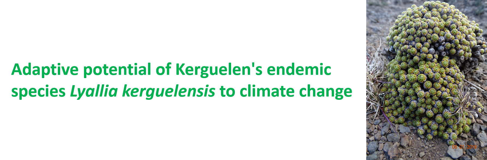
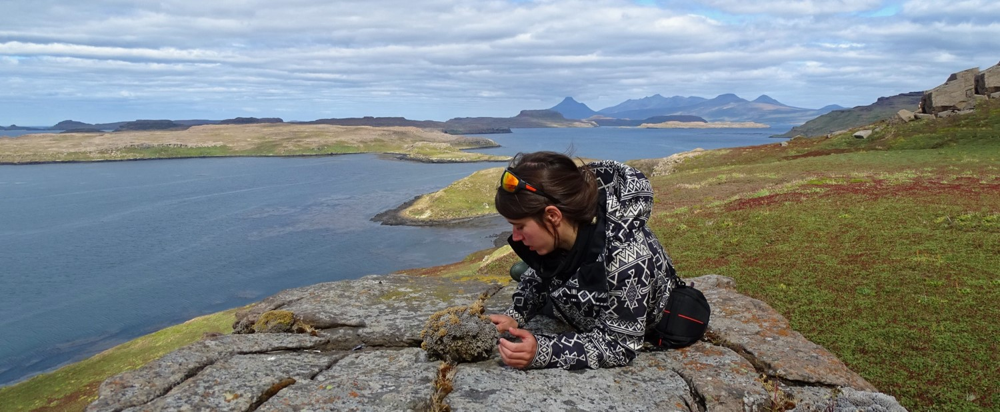

 PhD of 3 years and 3 months from October 2018 to December 2021
Funded by the University of Rennes 1, EGAAL Docoral school
PhD director: Dr F. Hennion (CNRS) and co-supervisor Dr M. Tarayre (University of Rennes 1)
During my PhD, I’m trying to determine the adaptive potential of Kerguelen’s endemic species Lyallia kerguelensis to climate change. We hypothesized that a combination of genetic adaptation and individual plasticity might occur in contrasted environments with the contribution of micro-organisms.
I use various methodologies to capture the variability from the molecular approach (gene expression, metabolites) to the phenotipic approach (morphology) in natura in contrasted environments. I’m also interested in the relation between plants and micro-organisms and how it could help the plant under abiotic stresses.
My field work took place in Kerguelen Islands (sub-Antarctic). For 4 months I looked for various plant populations in contrasted environments and collected environmental data and biological samples of the plant holobionte.
Now back to the laboratory in Rennes, I’m analysing samples using metabolomic and transcriptomic methods for the leaves and metagenomic methods for the microbial communities of the rhizosphere.
 L. kerguelensis on top of a rock, plant with a necrotic shape.
 On le left: large and vigorous L. kerugelensis individual. On the right L. kerguelensis individual with yellowing leaves, probably the first step of nercosis.
On le left: large and vigorous L. kerugelensis individual. On the right L. kerguelensis individual with yellowing leaves, probably the first step of nercosis.
 On the left: treck to the L. kerguelensis station, Plateau du vent with the Mont Ross in background . On the right: around the camp at Mac-Murdo island.
On the left: treck to the L. kerguelensis station, Plateau du vent with the Mont Ross in background . On the right: around the camp at Mac-Murdo island.
 On the left: stem psychrometer experiment on a small L. kerguelensis individual, on the right: environmental variables measurment with the Kerguelen Arche in background.
On the left: stem psychrometer experiment on a small L. kerguelensis individual, on the right: environmental variables measurment with the Kerguelen Arche in background.
Copyright © 2021 L. J. Marchand. All rights reserved.